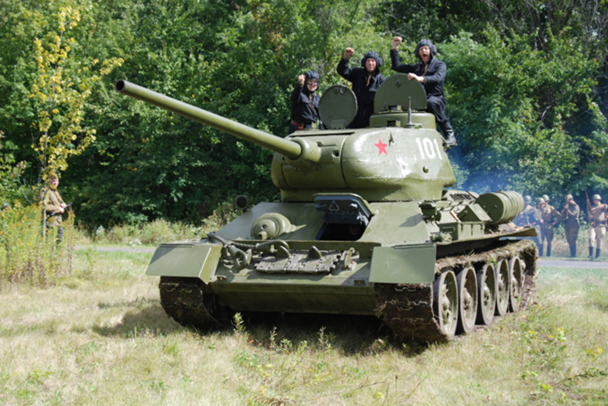
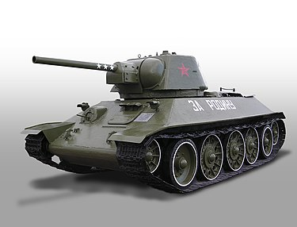

T-34
Informacije o vozilu:
| Specifikacija | Detalji |
|---|---|
| Naziv | T-34 |
| Tip | Srednji tenk (31 tona) |
| Uveden u uporabu | 1940. godine |
| Naoružanje | 76,2 mm F-34 Model iz 1941 naoružan ovim topom i 2 × 7,62 mm strojnice DT |
| Oklop | 70 mm |
| Brzina | 55 km/h |
| Posada | 4 člana |
S proizvodne linije u rujnu 1940. sišli su prvi tenkovi T-34, dok je proizvodnja tenkova T-26, T-28 i serije BT bila prekinuta. Nakon smrti Koškina krajem rujna 1940. od upale pluća, glavni dizajner HKBM-a postaje Aleksander Morozov. Prve inačice T-34 obično su poznate po njemačkoj nomenklaturi T-34/76 (76 označava kalibar topa). Kroz rat nastaje druga glavna inačica T-34/85 (ili T-34-85) s većom kupolom i topom od 85 mm.

T-34 iz 1942. godine"